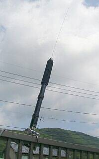 |
今回の「槌より柄の方が重たいお話」は、このＡＴＡＳ-１００をいただいたところからスタートします
手に入れたのだけど、使える環境がないと、とある方が置いて帰られたものです
試しにＤＣ１２ＶとＤＣ８Ｖをかけると、ちゃんと上下動作（伸縮動作）をします
多分、アンテナとして活きているのであろう・・・です
こうなると一度正式？に使ってみたい・・・という気持ちにもなります |
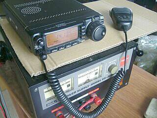 |
仕方なく？、ＦＴ-１００を入手しました
都合良く、セパレート・ケーブルも付いています
最初の実験は、上写真にあるように、アンテナをアルミフェンスに仮設置して様子を見ることからスタート
見た目は、ちゃんとマッチングが取れます
アンテナとしては正常そうです
当然と言えばそうなのでしょうが、受信ノイズ・レベルが非常に高い！
でも信号は聞こえてきます
しばらくこの仮設で様子を見ることにしました
先取りして、車用の基台（リア・ハッチにしか取り付きそうにない）と、デュプレクサを手配しました
今のところ、車載する気、満々です！？ |
|
| 以下、車（ＳＵＢＡＲＵ：ＥＸＩＧＡ）に設置の様子です |
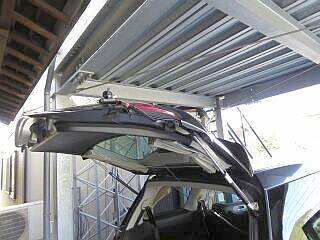 |
写真では見ずらいでしょうが
一時期コメットから発売されていた『アース君』を入手して使用
基台のところから、途中リアランプ・コンビネーション取付ボルトのところ１箇所と、リアハッチ・ダンパーのボディ側取付ボルト１箇所の計２箇所でボンディングしています（平編線長約１ｍを、そのまま使用）
なにせＨＦが相手ですから、少しでもアース側の面積を広く・・・です |
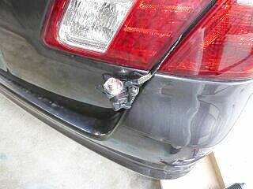 |
基台は、３軸に調整が出来る 第一電波工業 Ｋ－４１５ です
色々あてがってみましたが、ベストポジションはこの位置でした（ここしかないように思いました）
基台／アンテナ共に、ボディには当たりません
白っぽく見える平編線は、ボンディング用（コメット『アース君』 黒く見えるのはブチルテープを巻いたため）
基台の固定ですが、イモネジ側に使用する保護板は、厚さの関係で使用できませんでした（直接リアハッチにイモネジで取り付け）
|
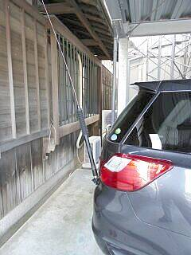 |
車ボディに、アンテナ基台が当たらないようにセットすると、こんな取付角度になりました
コイル部分が、ボディから離れる方向なので、ここは良しとします
思ったよりしっかり固定できましたので、このまま走行しても問題無さそうです
給電について
適当なルートが無く、リアハッチ・コンビネーションランプの球交換用の隠しカバーのところから車内に引き入れました
が、この先のルートの確保が出来ません
今回は仮設よろしく転がしています
パワーも５０Ｗですから、何も気にせず 第一電波工業 ５Ｋ１０４Ｍ を使用しましたが、きちんと配線ルートを確保するにはもう少し長さを要しそうです |
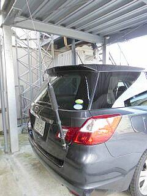 |
ご覧のように、事務所駐車スペースの屋根の下に収まりました（自宅のカー・ポートには当たってしまいます！）
これ以上、アンテナ基台を取り付けるつもりはありませんので、デュプレクサ ＭＸ－６２Ｍ も、基台と一緒に入手しました
これで、ＷＡＲＣバンドを除き、７～４３０ＭＨｚ帯までカバーするはずです
ＦＴ－１００
受信範囲ワイド化がしてありました
動物検知通報用に使用の１４２ＭＨｚ帯も受信できました Ｌｕｃｋｙ！！
ＦＭ放送も聴けるようですが、今回については、あまり意味がありません |
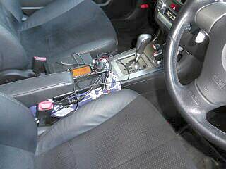 |
入手したＦＴ－１００に付属していた、ＤＣケーブルとセパレート・ケーブルをそのまま使って、セッティングしてみたものです
電源は、バッテリから直接引きます
センター・コンソールの後ろに本体が置けるほどＤＣケーブルが長くありません
本体オシリを前に向けてセンター・コンソールの上に置いただけです
セパレートとなるコントローラですが、適当な置き場所が無く（インパネ右端に固定する方法があれば一番ＦＢかと）、ご覧のように、とりあえずセンター・コンソールに置いた本体の上です |
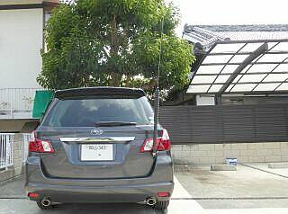 |
よく見ると、やや外向きかな・・・くらいです
これ以上、内に向けようとすると、基台の一部がボディ（一体バンパ）に当たってしまいます
ボディからコイル部分を離す、という無線中心の考えであれば、これはこれで良いと思われます
車内のセンター・コンソール周りがすっきりしないのと、操作パネルが固定できていない点は、宿題です
ＤＣケーブルを伸ばして、外部スピーカーを利用するようにすれば、本体は座席下などに収納できそうですが・・・ |
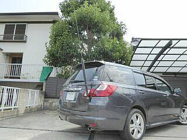 |
屋根の無いところに出してマッチングを取ってみました
グランド効果はＯＫそうで、７ＭＨｚ帯においてもＳＷＲは十分落ちます
受信ノイズも、容量結合と思われるアルミフェンス時よりは低減されて聞こえます
車の発するノイズは、ほとんど感じられません（エンジンをかけると、ジーッと言うノイズが少し増える）
お昼過ぎという時間帯ですが、７ＭＨｚＳＳＢ国内ＱＳＯがＳ７～９で入感します
２１ＭＨｚでは、ＶＫのＳＳＢ信号が、やはりＳ７位で入感しています
|
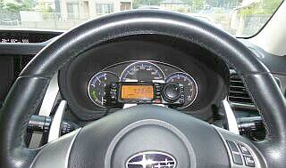 |
手元にあったフレキシブル・マウント（携帯／スマホ等をダッシュボード、あるいはエアコン吹き出し口に固定するもの）の一部を使って、操作部をステアリングの中に見える位置に置いてみました（メーターパネル下を挟んでいる）
ダイヤル操作くらいでは動きません
接続ケーブルは、センター・コンソールに沿わせて下ろし、フロア・カーペットの下に隠して（ＤＣコードと一緒に）運転席下まで引きました |
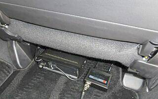 |
無線機本体を運転席の下に収納してみました
この場所なら、付いてきたＤＣコードで届きます
マイクもシート左横から引き上げれば、延長しなくてもなんとか使えそうな感じです
この後、奥に押し込んで同軸ケーブルをフロア・カーペットの下に隠すことで、目に付かなくなり、この運転席の後ろに人が乗車しても、無線機の設置に気付かないようになったと思います
音量を少し上げることで（午後２時あたりまで）、本体内蔵スピーカーでも十分聞き取れます |
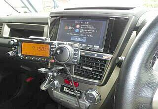 |
スマホ取り付け用のマウントを色々探して、このものに落ち着きました
ご覧のように大きなクリップでエアコン吹き出し口のフィンを掴むもので、意外と強力にグリップします
ディスプレイ視野ほか、車に関した操作にも大きく影響は与えない場所です（もちろん助手席着座の人にも影響を与えません）
後はケーブルの終いだけ・・・
これで一連の作業は終了です |
これで、日頃の車の使用に影響なく、無線が使える環境の整備が出来ました
無線機を車にセット・・・自家用とは言え、小売業を辞めて以来の、本当に久しぶりの作業でした
後は、運用するかどうか・・・ご本人次第です！？ |
|
とある方が、置いて帰られたＡＴＡＳ-１００
これがために「槌より柄の方が重たいお話」になってしまったという一件です
車も乗り始めて丸６年を過ぎましたので、少々何かがあってもいいや、と言う気にもなったと言うことかも知れません
それなりに遠出する機会（特にイナカ向き）はあるのですが、実際に電波を出す機会があるかどうかは？？？です
なにせ移動運用は、開局間もない頃と、車に乗り始めの頃しか実績がありません！
今回の取り組みですが、いろんな災害が発生する昨今、もしかしたら何か世間のお役に立てることがあるかも知れないという思いも、頭の隅っこにあります（日頃出かけることの多い先は、いわゆる限界集落と言われる状況に近いところが少なくありません）
デジタル・リピータには対応できませんが、車はフルタイム四駆、無線機はローカルでは役立つ１４４ＭＨｚ帯もカバーしていますので、エンジンさえかかっていれば動くことのできる連絡手段としては活かせそう、です
一方、遊びが本気になれば、電磁ループなどにも手を出すかも・・・ |
|
| 「槌より・・・」 岡山限定のことわざ？？ だとしても、意味はお分かりですね |
| |
2016.09 ＪＡ４ＦＵＱ |